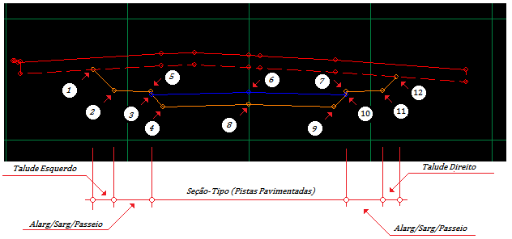

Criar Seção Tipo
6- Criar a Seção-Tipo:
O programa Vias Urbanas & Estradas permite que se crie projetos com qualquer seção tipo e ainda permite que elas variem ao longo do trecho. Esta propriedade dá muita flexibilidade ao projeto. As seção-tipo é composta pelos pontos das pistas de rolamento, e podem possuir qualquer quantidade de pistas com qualquer quantidade de pontos. Para complementar a seção tipo pode-se inserir alargamentos sarjetas ou passeios, que também podem variar ao longo do trecho e possuir qualquer quantidade de pontos. Ao longo do projeto pode haver qualquer número de seções-tipo e estas seções tipo podem conter qualquer número de pontos. O ponto (0,0) geralmente é o eixo da seção e é neste ponto que se aplica o greide (Gradiente), mas nada impede que o ponto (0,0) esteja fora do eixo da seção como também o gradiente, que pode estar em qualquer ponto da seção tipo. No caso de superelevação, a seção tipo girará em torno do ponto definido como gradiente. É preciso um atenção especial para este fato. pos se o grafiente não estiver no eixo das pistas, a posta que o contiver será superelevada errôneamente. O gradiente deve ser usado principalmente quando o eixo das pistas estiver fora do eixo das seções de terreno, mas deve estar sempre no eixo das pistas de rolamento. No caso em que o eixo das pista esteja no eixo das seções o gradiente deve ser 0,0.
Caso se deseje que alguma(s) pista(s) não sofra superelevação, elas devem ser marcadas na tarefa de Pistas Fixas. Nesta tarefa sã]o marcados o início e o fim das pistas que não sofrerão superelevação, portantos estes pontos devem existir na seção tipo.
Os pontos da seção tipo devem ser digitados da esquerda para a direita, ou seja, do ponto mais a esquerda ao ponto mais a direita, os pontos devem estar OBRIGATORIAMENTE em ordem seqüencial do eixo x e os pontos a esquerda do ponto (0,0) devem ser negativos, isto é, precedidos do sinal “-“. O valor do delta x não pode ser igual ou menor que zero, portanto para rampas verticais, digite um valor mínimo , por exemplo ±0,001.

Descrição dos pontos:
Abaixo segue a descrição de cada ponto e a tarefa em que ele é digitado (em parêntesis).
1 – Offset Esquerdo (Ponto Calculado).
2 – Fim do passeio esquerdo. (Alargamento/Sarjeta/Passeio)
3 – Pé do meio-fio e fim da pista de pavimentação esquerda. (Seção-Tipo)
4 – Bordo da terraplanagem (Ponto Calculado)
5 - Crista do meio-fio e início do passeio. (Alargamento/Sargeta/Passeio)
6 – Gradiente (neste caso está no eixo da pista) (Seção Tipo e Gradientes)
7 – Crista do meio-fio e início do passeio (Alargamnto/Sarjeta/Passeio)
8 – Gradiente na terraplanagem.
9 – Bordo direito da terraplanagem. (Ponto Calculado)
10 – Fim da pista de pavimentação, pé do meio-fio e fim do talude de pavimentação direito.(Seção-tipo)
11 – Fim do passeio e início do talude direito (Alargamento/Sarjeta/Passeio)
12 – Off-Set direito (Ponto Calculado)
Observe que:
- Os pontos calculados não são digitados, são o resultado de algum cálculo feito pelo programa.
- Todo o ponto que é início de algum setor da seção tipo, deve estar digitado naquela tarefa como (0,0) por exemplo: O pé do meio fio deve ser digitado como (0,0) na tarefa de Alargamentos/Sarjetas e Passeios mas também é o ponto que finaliza a seção tipo, neste exemplo (-4,-0.12) para o lado esquerdo da seção tipo, veja abaixo.
Para esta seção tipo devem ser digitados:
Tarefa de Seções Tipo de Pavimentação

As coordenadas são fornecidas em relação à origem (0.0). Observe que a inclinação da pista é de -3% (-0.12/4.0*100)
Tarefa de Alargamentos/sarjetas e passeios

Nesta tarefa devem ser fornecidos os deltas em relação ao ponto anterior.
Tarefa de Taludes de Pavimentação

Nesta tarefa devem ser fornecidas as inclinações dos taludes do pavimento em relação ao eixo horizontal .
Os ângulos para cálculo das inclinações devem estar de acordo com o círculo trigonométrico (Início no eixo horizontal no sentido crescente e giro para a esquerda).
Tarefa de Taludes de Corte

Nesta tarefa devem ser fornecidos os deltas em relação ao ponto anterior
Neste caso o talude é formado por uma reta apenas.
Tarefa de Taludes de Aterro

Nesta tarefa devem também ser fornecidos os deltas em relação ao ponto anterior
e o talude é formado por uma reta apenas.
Tarefa de Gradientes

Neste caso o gradiente está no eixo da pista.
Tarefa de Espessuras do pavimento

Espessura total das camadas de pavimentação = 0,50 m
Tarefa de Limpeza do Terreno

0,50m de altura e 3 m de excesso lateral
Para detalhes veja as Tarefas de digitação.
Direitos Autorais © (2010 - 2015) - Boole Software LTDA - Todos os direitos Reservados.
Created with the Personal Edition of HelpNDoc: Produce Kindle eBooks easily